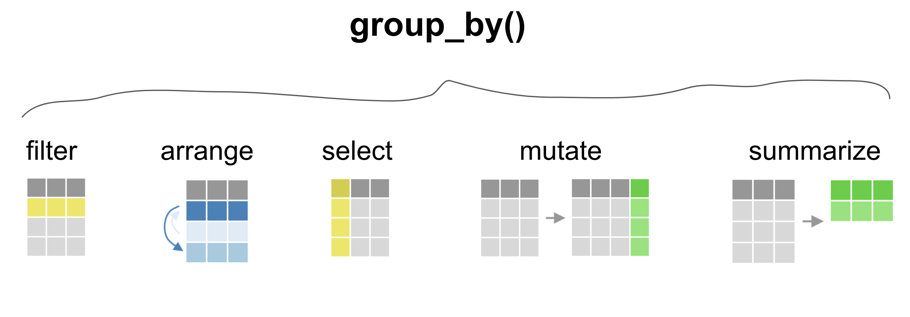
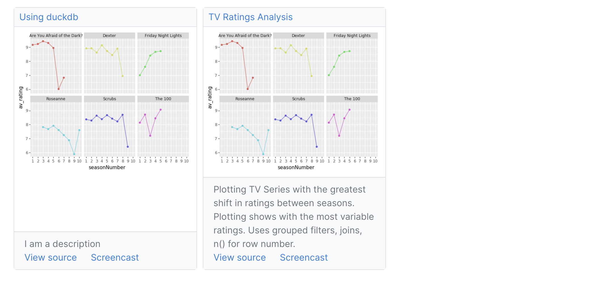
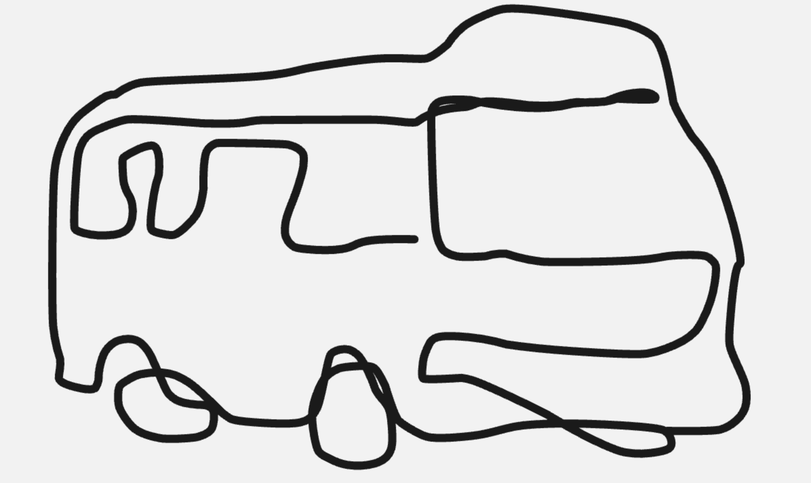

from siuba.data import cars
from siuba import _, filter
filter(cars, _.mpg == _.mpg.max())| cyl | mpg | hp | |
|---|---|---|---|
| 19 | 4 | 33.9 | 65 |
siuba (小巴) is an analysis framework that makes data science faster. It provides a simple, consistent interface that handles messy, real-life data.
Use the same code to work directly with a pandas DataFrame, or execute SQL queries against a database—such as postgresql, duckdb or snowflake.
Everybody has to start somewhere. Bring your questions, bring your hot takes, bring the excel spreadsheets your boss emailed you.
group_by()
>>) puts it all togetherfrom siuba.data import mtcars
from siuba import _, group_by, filter
(mtcars
>> group_by(_.cyl)
>> filter(_.hp == _.hp.max())
)(grouped data frame)
| mpg | cyl | disp | hp | drat | wt | qsec | vs | am | gear | carb | |
|---|---|---|---|---|---|---|---|---|---|---|---|
| 27 | 30.4 | 4 | 95.1 | 113 | 3.77 | 1.513 | 16.9 | 1 | 1 | 5 | 2 |
| 29 | 19.7 | 6 | 145.0 | 175 | 3.62 | 2.770 | 15.5 | 0 | 1 | 5 | 6 |
| 30 | 15.0 | 8 | 301.0 | 335 | 3.54 | 3.570 | 14.6 | 0 | 1 | 5 | 8 |
from siuba import _, tbl, group_by, filter
from siuba.data import cars
# setup ----
from sqlalchemy import create_engine
engine = create_engine("duckdb:///:memory:")
# analysis ----
(tbl(engine, "cars", cars)
>> group_by(_.cyl)
>> filter(_.mpg < _.mpg.mean())
)/opt/hostedtoolcache/Python/3.9.14/x64/lib/python3.9/site-packages/duckdb_engine/__init__.py:229: DuckDBEngineWarning: duckdb-engine doesn't yet support reflection on indices
warnings.warn(# Source: lazy query # DB Conn: Engine(duckdb:///:memory:) # Preview:
| cyl | mpg | hp | |
|---|---|---|---|
| 0 | 4 | 22.8 | 93 |
| 1 | 4 | 24.4 | 62 |
| 2 | 4 | 22.8 | 95 |
| 3 | 4 | 21.5 | 97 |
| 4 | 4 | 26.0 | 91 |
# .. may have more rows
from siuba import _, tbl, group_by, filter
from siuba.data import cars
# setup ----
from sqlalchemy import create_engine
engine = create_engine("sqlite:///:memory:")
cars.to_sql("cars", engine, index=False)
# analysis ----
(tbl(engine, "cars")
>> group_by(_.cyl)
>> filter(_.mpg < _.mpg.mean())
)/home/runner/work/siuba-guide/siuba-guide/src/siuba/siuba/sql/utils.py:85: SAWarning: Class AggOver will not make use of SQL compilation caching as it does not set the 'inherit_cache' attribute to ``True``. This can have significant performance implications including some performance degradations in comparison to prior SQLAlchemy versions. Set this attribute to True if this object can make use of the cache key generated by the superclass. Alternatively, this attribute may be set to False which will disable this warning. (Background on this error at: https://sqlalche.me/e/14/cprf)
return self.connectable.execute(*args, **kwargs)# Source: lazy query # DB Conn: Engine(sqlite:///:memory:) # Preview:
| cyl | mpg | hp | |
|---|---|---|---|
| 0 | 4 | 22.8 | 93 |
| 1 | 4 | 24.4 | 62 |
| 2 | 4 | 22.8 | 95 |
| 3 | 4 | 21.5 | 97 |
| 4 | 4 | 26.0 | 91 |
# .. may have more rows

